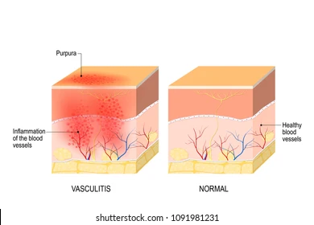
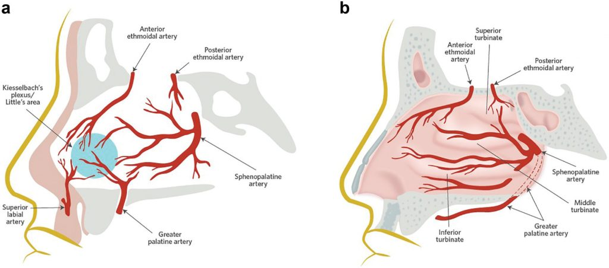

Home (EN)
Accueil (FR)
More
Tout type de dommage corporel est considéré comme une
blessure. Par conséquent, les contusions, coupures, brûlures
et saignements de nez sont également considérés comme
des blessures.
 